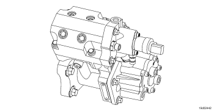

Código de Falha 281
|
| CÓDIGO | RAZÃO | EFEITO |
| Código de Falha: 281 PID: S126 SPN: 1347 FMI: 7 LÂMPADA: Amarelo SRT: |
Conjunto de Pressurização da Bomba de Combustível do Motor No. 1 - Sistema Mecânico Não Responde ou Fora de Ajuste. Desequilíbrio de bombeamento entre os êmbolos de bombeamento. |
O motor não funcionará ou funcionará com baixa potência. |
|
 ISL8.9 CM2150 SN/ISZ13 CM2150 - Bomba de Alta Pressão
|
A bomba de combustível contém dois conjuntos de barril e êmbolo; cada conjunto de barril e êmbolo utiliza uma válvula de retenção na entrada e na saída. O combustível na pressão da bomba de engrenagens é medido através do atuador da bomba de combustível e aciona uma das duas válvulas de retenção de admissão à medida que o combustível na pressão da bomba de engrenagens entra na câmara de bombeamento. À medida que o êmbolo de bombeamento começa seu movimento para cima, a pressão na câmara de bombeamento aumenta rapidamente e a válvula de retenção na admissão é fechada. Quando a pressão se iguala à pressão do acumulador, a válvula de retenção na saída se abre. À medida que o êmbolo move-se para cima, o combustível deixa a válvula de retenção na saída e pressuriza a common rail.
A bomba de combustível está localizada no lado traseiro da carcaça das engrenagens. Os conjuntos de barril e êmbolo e válvulas de retenção são parte do subconjunto do cabeçote da bomba.
O diagnóstico é executado continuamente enquanto o motor funciona.
Este código de falha é ativado quando é detectado um desequilíbrio de bombeamento entre os êmbolos de alta pressão no interior da bomba de combustível.
Muito provavelmente, o Código de Falha 281 se tornará ativo durante a operação em uma condição contínua sob carga. Nessa condição, as pressões comandadas do combustível são as mais altas e o equilíbrio de pressão na bomba é mais afetado.
Se houver falha de uma vedação de alta pressão, haverá excesso de fluxo de dreno pelo cabeçote da bomba. Se a falha da vedação estender-se até um determinado ponto, o motor poderá não funcionar devido à incapacidade de geração de pressão na common rail.
Se o motor não der a partida, existem duas indicações de que houve falha no cabeçote da bomba (use o seguinte manual para diagnosticar as informações: Manual de Serviços dos Motores ISL8.9 CM2150 SN, Boletim 4022196):
Se o nível de óleo do motor estiver aumentando como consequência e o Código de Falha 281 se tornar ativo, o cabeçote da bomba está defeituoso e deve ser substituído.
Consulte o diagnóstico do Código de Falha 281.